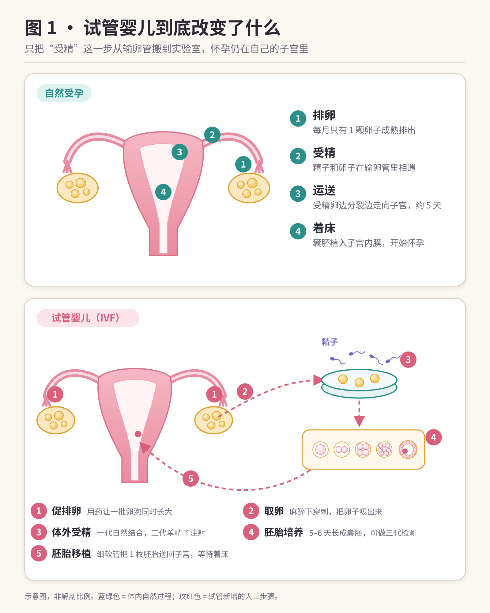
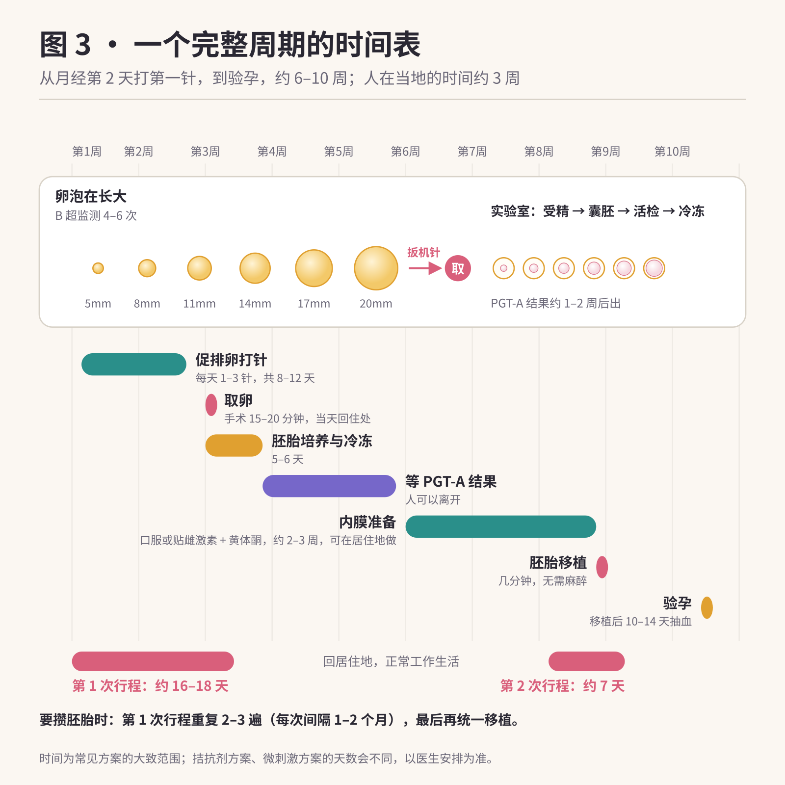
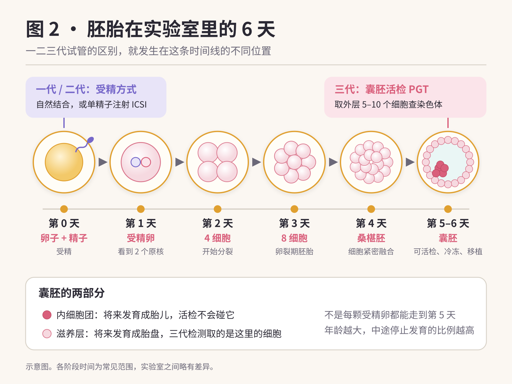
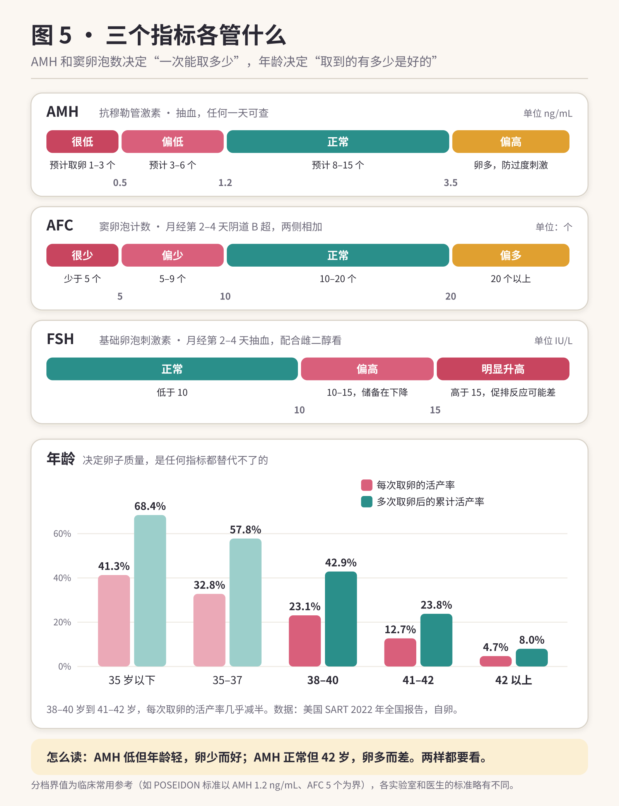
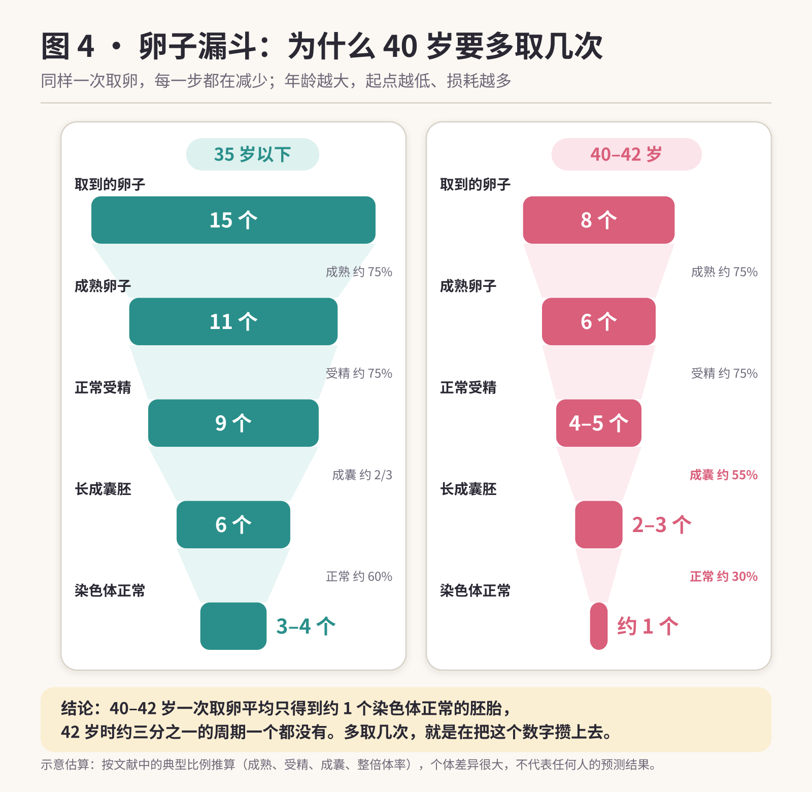
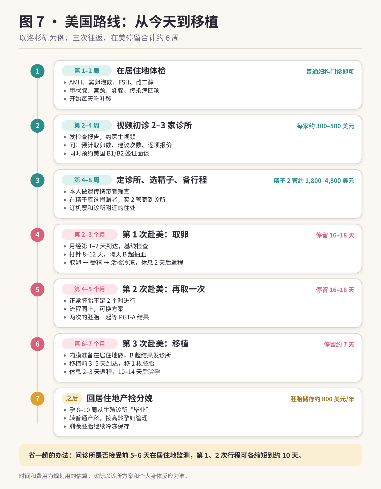
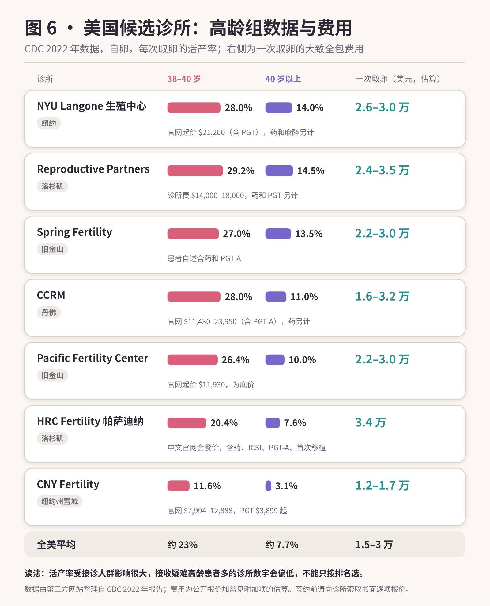

40岁单身女性试管婴儿与代孕调研：中国、韩国、美国、东南亚
更新日期：2026-11-22
核心结论
40 岁单身女性想用自己的卵子加捐赠精子做试管，在中国大陆、香港、台湾、韩国、泰国、马来西亚、新加坡目前都走不通，现实可行的是美国，其次是欧洲（西班牙、丹麦等）和越南。
- 时间比钱更紧。 美国全国数据里，用自己卵子的每次取卵活产率在 38–40 岁是 23.1%，41–42 岁降到 12.7%，42 岁以上只有 4.7%（SART 2022）。先做卵巢功能评估，再决定去哪。
- 首选路径：美国，自卵 + 精子库供精 + 三代筛查，胚胎移回自己子宫。 法律上最干净，单身不受限。单周期全包约 2–3 万美元，40 岁通常要按 2–3 次取卵准备，总预算 5–9 万美元。
- 省钱路径：西班牙、丹麦、北塞浦路斯等。 单身女性合法，供精试管单周期约 3,500–7,000 欧元，但中文服务和华裔供精者少。
- 越南自 2025 年 10 月起允许单身女性按个人意愿做试管，但供精严重短缺，外国人能否接诊要逐家确认。
- 自卵多次失败后的备选是供卵，每次移植活产率约 41–56%，基本不随受者年龄下降，但孩子与本人没有遗传关系。
- 代孕只在身体不能怀孕时才值得考虑。 对单身女性法律稳定的基本只剩美国，全程 15–25 万美元以上；中国卫健委 2026 年 11 月 13 日再次强调严禁任何形式代孕，并提醒不要轻信跨境代孕“合法安全”的宣传。
本文是信息调研，不是医疗或法律意见；涉及个人方案请以生殖医生和当地律师的意见为准。
试管婴儿的原理与流程
试管婴儿（IVF）就是把受精这一步从输卵管搬到实验室：用药让卵巢一次成熟多颗卵子，取出后在体外与精子结合，培养成胚胎，再放回子宫。孩子仍在母体内发育 9 个月，并不是在试管里长大。


从促排到取卵约两周，人必须在诊所所在地；做三代筛查时胚胎先冷冻，移植可以隔一两个月再去一趟，所以跨国做通常是两次行程。
几个关键原理：
- 为什么要促排。 自然周期每月只成熟 1 颗卵。促排药（FSH/LH 类）让本月本来会萎缩的那批卵泡一起长大，并不会“提前用光”卵子库存。
- 漏斗效应。 取到的卵子不会都变成可用胚胎：成熟、受精、长到囊胚、染色体正常，每一步都会减少。年龄越大，每一步损耗越多，所以 40 岁常需要多次取卵“攒胚胎”。
- 为什么先冷冻再移植。 促排后激素水平高，内膜状态未必理想；玻璃化冷冻的囊胚复苏率很高，等身体恢复、检测结果出来再移植已是主流做法。
- 主要风险。 卵巢过度刺激综合征（OHSS，40 岁发生率较低）、取卵穿刺出血或感染（少见）、多胎（只移植 1 枚可避免），以及高龄怀孕本身的妊娠高血压、妊娠糖尿病风险。
一代、二代、三代试管的区别
“几代”是中文圈的俗称，指的是解决不同问题的三种技术，不是越新越好；三代是在一代或二代的基础上加一道胚胎检测。

| 俗称 | 正式名称 | 做法 | 解决什么问题 | 对 40 岁单身女性 |
|---|---|---|---|---|
| 一代 | 常规 IVF | 卵子和几万条精子放在一起，自然受精 | 输卵管堵塞等女方因素 | 供精质量好时可用 |
| 二代 | ICSI（卵胞浆内单精子注射） | 显微镜下挑 1 条精子直接注入卵子 | 精子少、活力差；卵子少或用冻卵时保证受精 | 卵子数少，多数诊所会直接用 |
| 三代 | PGT（胚胎植入前遗传学检测） | 囊胚取 5–10 个外层细胞检测，挑正常胚胎移植 | PGT-A 查染色体数目；PGT-M 查单基因病；PGT-SR 查染色体结构异常 | PGT-A 最相关，见下 |
| “四代” | 卵胞浆或线粒体置换 | 把卵子的核移到年轻供卵的胞浆里 | 理论上改善卵子胞浆质量 | 绝大多数国家未批准用于此目的，遇到机构以此招揽要警惕 |
三代（PGT-A）对 40 岁的意义。 高龄胚胎的主要问题是染色体数目异常：一项研究中 38 岁以上只有约三成囊胚染色体正常（PMC7000583）。PGT-A 不能让胚胎变好，但能提前把不正常的筛掉，少走“移植—不着床或流产”的弯路。
- 好处：每次移植的成功率更高、流产更少、可以放心只移 1 枚。美国数据里，41–42 岁每次移植的活产率是 34.6%，远高于每次取卵的 12.7%，差距就来自很多周期没有可移植胚胎。
- 局限：每次取卵的累计活产率不会因检测而提高；只有 1–2 枚囊胚时，检测的价值下降；检测有少量误判，怀孕后仍要做无创 DNA 或羊水穿刺。
- 费用：美国约 3,000–8,000 美元，泰国约 2,000–4,000 美元。
40 岁的现实：成功率、卵子与精子来源
40 岁用自己的卵子，单次取卵抱娃的概率大约在四分之一上下，而且每过一年都在明显下降，所以要按多次取卵来规划。

美国全国数据（自卵，SART 2022 年报告）：
| 取卵时年龄 | 每次取卵活产率 | 每次移植活产率 | 新患者累计活产率（含多次取卵） |
|---|---|---|---|
| 35 岁以下 | 41.3% | 52.7% | 68.4% |
| 35–37 岁 | 32.8% | 49.0% | 57.8% |
| 38–40 岁 | 23.1% | 43.9% | 42.9% |
| 41–42 岁 | 12.7% | 34.6% | 23.8% |
| 42 岁以上 | 4.7% | 17.8% | 8.0% |
美国疾控中心的模型估算，一位 40 岁、无其他不孕因素的女性，取卵 1、2、3 次后的累计活产率分别约为 25%、41%、52%（CDC）。个人实际数字取决于卵巢储备，所以第一步是检查。

图 4 的比例是按文献典型值做的示意估算：成熟和受精率各约 75%，成囊率随年龄从约三分之二降到 55% 左右（研究），染色体正常率从约 60% 降到约 30%；42 岁时约三分之一的周期没有正常胚胎（Franasiak 2014）。
先查三项，判断自己在哪一档。 这些都是普通妇科检查，在任何国家都能做，不需要结婚证。
- AMH（抗穆勒管激素）：抽血，任何一天都可查，反映卵子库存。
- 窦卵泡计数（AFC）：月经第 2–4 天阴道 B 超，预估一次能取多少卵。
- 基础 FSH 和雌二醇：月经第 2–4 天抽血。
卵子来源。
- 自卵：孩子与本人有遗传关系，成功率受年龄限制，见上表。
- 供卵：用年轻捐赠者的卵子，每次移植活产率约 41–56%，取决于新鲜或冷冻（CDC 2018–2020）；正常胚胎移植后的活产率基本不随受者年龄下降（研究）。代价是没有遗传关系，美国供卵周期约 3.5–6 万美元。
- 43 岁以后自卵活产率降到个位数，多数医生会建议转供卵。
精子来源。
- 精子库匿名或可追溯身份的捐赠者：经过传染病和遗传携带者筛查，法律上捐赠者没有父亲身份，最省心。美国每管约 1,000–2,500 美元，建议一次买 2–4 管。
- 熟人捐精：可行，但必须先签法律协议并做同样的筛查，否则日后可能有抚养权和抚养费纠纷。
- 华裔捐赠者在欧美精子库数量有限，选择面窄，要提早挑选和预订。
中国大陆及港台
中国大陆的正规医院不能为单身女性做试管、供精或冻卵，香港和台湾目前也要求已婚；在国内能做的是前期检查、怀孕后的产检分娩和孩子落户。
大陆法规。
- 2003 年《人类辅助生殖技术规范》明确禁止给单身妇女实施辅助生殖技术，精子库也只服务于不育夫妇，这一规定至今有效（梳理，2026 年 5 月）。
- 全国首例单身女性冻卵案（徐枣枣案）2024 年 8 月终审败诉（澎湃）。
- 吉林省条例纸面上允许“决定不再结婚且无子女的妇女”用辅助生殖生育一个孩子，但医院仍要执行国家规范，省卫健委 2023 年承认实施有难度，实际做不了。
- 《辅助生殖技术管理条例》2021 年起草至今无公开进展；2026 年深圳两会有人提议争取单身女性冻卵试点，仅是建议（金羊网）。不要把计划押在政策放开上。
- 国内“地下”机构属违法，没有医疗质量和法律保障，实验室随时可能被查封，不建议考虑。
费用参考（仅已婚夫妇可用）。 一个周期约 3.5–4 万元人民币，31 个省份已把取卵、胚胎培养、移植等项目纳入医保（第一财经、央视）。
在国外做完、回国生，是否可行。 可行，这是目前最常见的做法。
- 非婚生育不违法，社会抚养费已于 2021 年取消，生育情况与入户、入学脱钩。
- 四川、广东、陕西、福建、安徽等地办生育登记已不要求结婚证（澎湃）。
- 非婚生子女可随母落户，凭出生医学证明办理，父亲一栏可空缺。
- 生育保险：国家医保局 2022 年表态待遇享受不设婚姻门槛，但各地经办口径不一，需向参保地确认（界面）。
香港。 单身女性可以冻卵，最长储存 10 年，但必须合法结婚后才能用来做试管（港大生殖中心）。
台湾。 现行《人工生殖法》只适用于已婚夫妻。行政院 2025 年 12 月通过修正草案，拟开放给满 18 岁单身女性和女同婚配偶；立法院 2026 年 7 月初审未完成（联合报）。有台湾女性把冻卵运到美国做试管，花费超过 140 万新台币（公视）。
韩国
韩国没有法律禁止单身女性做试管，但医院按行业伦理指南一律拒绝，实际上做不了；单身女性在韩国能做的只有检查和冻卵。
- 法律与指南的落差。 保健福祉部的解释是非婚者接受辅助生殖并非禁止事项，但大韩妇产科学会的《辅助生殖术伦理指南》规定供精、供卵手术原则上只对夫妻（含事实婚）实施，医院据此要求出示婚姻证明（女性新闻，2026 年 10 月）。
- 改革进展。 国家人权委员会 2022 年建议修改指南，学会以“需先有社会共识和立法”为由拒绝。2026 年 10 月国会国政监查中，法制处长表示该建议“妥当”，并称会研究纠正的可能，但指南尚未改动。
- 精子来源。 韩国没有国家级公共精子库，各医院自建的小型精子库只向法律婚或事实婚夫妻提供。
- 韩国人自己怎么办。 藤田小百合（Sayuri）回日本做，近年也有韩国非婚女性去丹麦做供精试管（中央日报）。
- 冻卵可以做。 单身女性可以冻卵，每次约 250–500 万韩元，但日后解冻受精时诊所通常要结婚证（Korea Times）。40 岁再冻卵等待政策，效率很低。
- 费用参考（仅已婚可用）。 医疗旅游资料称每周期约 4,000–7,000 美元（不含药费），该数字来自中介类网站，仅供量级参考。
韩国能起的作用。 住在韩国的话，AMH、B 超等前期评估可以在当地妇科完成；在国外移植成功后，产检和分娩在韩国按普通孕产妇进行即可。
美国
美国是单身女性做供精试管法律障碍最少、数据最透明的地方，缺点是贵：单周期全包约 2–3 万美元。
法规。 联邦和各州都不按婚姻状况限制试管。美国疾控中心的诊所报告显示，99% 的诊所接诊单身女性（CDC 2016）。外国人自费就医没有额外限制，精子库受 FDA 监管，捐赠者依法不承担父亲责任。
费用（2026 年，自费）。
| 项目 | 费用（美元） |
|---|---|
| 基础周期（监测、取卵、实验室、移植） | 12,000–17,000 |
| 促排药 | 3,000–7,000 |
| ICSI（二代） | 1,000–3,000 |
| PGT-A（三代） | 3,000–8,000 |
| 冷冻胚胎移植（每次） | 3,000–6,000 |
| 供精（每管） | 1,000–2,500 |
| 单周期合计 | 15,000–30,000 |
| 供卵周期（如改用供卵） | 35,000–60,000 |
来源：Free Market Healthcare、GoodRx、Carrot、American Surrogacy。平均要 2.3 个周期才能抱娃，40 岁建议按 2–3 次取卵加 1–2 次移植做预算，约 5–9 万美元，另加机票和 3–5 周住宿。
怎么选诊所。
- 用 SART 或 CDC 的诊所级报告，只看“自卵、41–42 岁”这一栏的每次取卵活产率和病例数，不要看诊所官网宣传的总成功率。
- 问清是否按项目报价、是否有多周期套餐、胚胎和卵子每年储存费。
- 加州（洛杉矶、湾区）的诊所中文医生和协调员最多；直接联系诊所的国际患者部，比经中介便宜且责任清楚。
精子库。 California Cryobank、Fairfax Cryobank、Seattle Sperm Bank 等大型精子库可在线筛选族裔、身高、学历、遗传筛查结果，可选“成年后可公开身份”的捐赠者，精子直接寄到诊所。
行程与签证。 通常两次赴美：促排取卵约 2–3 周，移植约 1 周。以就医为目的申请 B1/B2 签证时如实说明并带上诊所预约函和资金证明。2026 年 8 月美国出台了针对“赴美生子”的入境行政令，赴美分娩的不确定性上升；只做试管、回国生产不在其针对范围，但签证官有裁量权。
美国路线详解：城市、诊所与费用
建议以洛杉矶为主线，先同时视频咨询洛杉矶和纽约各一家，再按医生给出的方案和报价定。按“2 次取卵加 1 次移植”准备，医疗加旅行合计约 6.4–9.7 万美元。

为什么是洛杉矶。
- 航线最方便：首尔、上海、北京都有直飞，单程约 11–13 小时。
- 华人社区大，诊所普遍有中文协调员，住在帕萨迪纳、阿凯迪亚、托伦斯一带生活成本和饮食都容易适应。
- California Cryobank 等大型精子库总部就在当地，精子寄送快。
- 同城可选诊所多，第一家不满意可以不换城市换诊所。
候选诊所（CDC 2022 年数据，自卵，每次取卵的活产率）。 40 岁整看“38–40 岁”一栏，41 岁起看“40 岁以上”一栏。
| 诊所 | 城市 | 38–40 岁 | 40 岁以上 | 公开价格 | 备注 |
|---|---|---|---|---|---|
| Reproductive Partners | 洛杉矶（Beverly Hills、Redondo Beach） | 29.2%（298 例） | 14.5%（214 例） | 周期诊所费 14,000–18,000 美元；移植 3,000–4,000 美元 | 有普通话服务；药、ICSI、PGT 另计 |
| HRC Fertility 帕萨迪纳 | 洛杉矶 | 20.4%（618 例） | 7.6%（498 例） | 单周期套餐 34,000 美元 | 中文官网；含药、ICSI、PGT-A、首次移植；须预付全款，开始后取消扣 10,000 美元 |
| NYU Langone 生殖中心 | 纽约 | 28.0% | 14.0% | 含基因检测的周期 21,200 美元起；初诊约 500 美元 | 不含药和麻醉；学术医院 |
| CCRM | 丹佛 | 28.0% | 11.0% | 全冻加 PGT-A 周期 11,430–23,950 美元；术前检查约 4,165 美元 | 以高龄和疑难病例知名；无直飞；多周期套餐限 40 岁及以下报名 |
| Spring Fertility | 旧金山 | 27.0%（389 例） | 13.5%（347 例） | 未公开；患者自述含药和 PGT-A 约 22,000–30,000 美元 | 移植约 5,000 美元 |
| CNY Fertility | 纽约州雪城 | 11.6% | 3.1% | 全包周期 7,994–12,888 美元；PGT 3,899 美元起；移植 1,940 美元 | 全美最低价之一，但高龄组数据明显低于平均 |
| 全美平均 | 约 23% | 约 7.7% |
数据来源：加州诊所汇总、纽约市诊所汇总、CCRM、CNY。这些是第三方网站整理的 CDC 数据，不同网站口径略有出入，定诊所前请在 CDC 或 SART 官网核对。

怎么读这张表。
- 活产率受接诊人群影响很大。接收疑难、多次失败患者多的诊所数字会偏低，例数少的诊所数字波动大，所以它只用来排除明显偏低的，不用来排名次。
- HRC 的优势是中文全程服务和一口价，弱点是高龄组数据接近全美平均；官网套餐页写的是“意向父母 1 和 2”，单身女性自卵自怀能否用这个套餐要先问清。
- CNY 便宜到可以多做几次，但 40 岁以上每次取卵活产率只有 3.1%，不建议把有限的时间押在这里。
- CCRM 的多周期套餐只收 40 岁及以下，如果还没满 41 岁，值得尽快问价。
我的建议顺序。
- 先约 Reproductive Partners 和 NYU Langone 的视频初诊，各要一份书面逐项报价。
- 如果非常看重全程中文和省心，再约 HRC 作对比，并问清单身女性适用的套餐。
- 两家给的方案差别不大时选洛杉矶；纽约只在医生方案明显更好或有亲友可投靠时选。
洛杉矶主线预算（2 次取卵、1 次移植，估算）。
| 项目 | 单价（美元） | 数量 | 小计（美元） |
|---|---|---|---|
| 取卵周期诊所费 | 14,000–18,000 | 2 | 28,000–36,000 |
| 促排药 | 4,000–7,000 | 2 | 8,000–14,000 |
| ICSI | 1,800–3,000 | 2 | 3,600–6,000 |
| PGT-A（含活检） | 3,500–5,500 | 2 | 7,000–11,000 |
| 麻醉（如未包含） | 500–1,200 | 2 | 1,000–2,400 |
| 冷冻胚胎移植 | 3,000–4,000 | 1 | 3,000–4,000 |
| 供精（California Cryobank） | 897–2,397 | 2 管 | 1,800–4,800 |
| 精子运费、胚胎首年储存 | 约 1,200 | ||
| 医疗小计 | 约 54,000–79,000 | ||
| 往返机票 | 900–1,600 | 3 次 | 2,700–4,800 |
| 住宿 | 130–220/晚 | 约 40 晚 | 5,200–8,800 |
| 当地交通和餐饮 | 60–100/天 | 约 40 天 | 2,400–4,000 |
| 旅行小计 | 约 10,000–18,000 | ||
| 合计 | 约 64,000–97,000 |
- 只做 1 次取卵就有正常胚胎：约 3.6–5.6 万美元。每多取一次卵，加 2.4–3.5 万美元和一趟行程。
- 走 HRC 套餐：2 个套餐 68,000 美元，加精子和旅行，约 8–9 万美元。
- 精子价格来自 California Cryobank 官网：新捐赠者（成年后可公开身份）每管 2,397 美元，早期捐赠者 897–1,897 美元。
- 诊所费和供精价是公开报价；药费、ICSI、PGT-A、麻醉是加州常见区间；机票、住宿、餐饮是我的估算。多数诊所要求周期开始前付清。
第 1 次赴美的日程（取卵）。
| 时间 | 做什么 |
|---|---|
| 出发前 1 个月 | 确认方案和用药清单；精子已到诊所；按医嘱可能先口服避孕药调周期 |
| 第 1–2 天 | 月经第 1–2 天抵达；基线 B 超和抽血；领药，护士教打针 |
| 第 2–11 天 | 每晚自己打针；第 5、7、9、11 天左右回诊所监测，每次约 1 小时；其余时间自由 |
| 第 12 天左右 | 卵泡长到 18–20 毫米，按指定时间打扳机针 |
| 第 14 天左右 | 取卵，需有人陪同接送；当天休息 |
| 第 15–16 天 | 诊所电话通知成熟数和受精数；休息观察，无不适即可返程 |
| 返程后 1 周 | 通知囊胚数；再过 1–2 周出 PGT-A 结果，决定是否再取一次 |
住哪里。 住在诊所车程 20 分钟以内。HRC 在帕萨迪纳，可住帕萨迪纳或阿凯迪亚；Reproductive Partners 在 Beverly Hills 和 Redondo Beach，可住西洛杉矶或托伦斯。取卵当天不能自己开车。
签证。 中国护照需 B1/B2 签证，面谈时如实说明赴美就医，带诊所预约函、治疗计划和资金证明。在韩国长期居留的可以在首尔申请。
初诊时要问诊所的 8 个问题。
- 单身外国女性用供精做自卵试管，贵诊所是否接诊，需要哪些文件。
- 按我的 AMH 和窦卵泡数，预计一次取几颗卵，建议做几次。
- 41–42 岁自卵患者在贵诊所每次取卵的活产率和每年例数。
- 书面逐项报价：周期费、药、ICSI、PGT-A、麻醉、冷冻、储存、移植各多少，是否有多周期优惠。
- 前几天的监测能否在我居住地做，接受哪些机构的报告。
- 周期中途取消或没有取到卵，怎么退费。
- 指定用哪家精子库，是否接受我自选的精子库。
- 是否有中文医生或协调员，时差下怎么联系。
东南亚
东南亚对单身女性合法开放试管的只有越南；泰国、马来西亚、新加坡都要求合法婚姻，只允许单身冻卵。中介宣称“泰国、马来西亚单身可做”的，要么是诊所违规操作，要么需要假结婚材料，法律和医疗风险都由本人承担。
| 国家 | 单身女性供精试管 | 单身冻卵 | 费用参考（每周期） | 要点 |
|---|---|---|---|---|
| 越南 | 合法 | 合法 | 5,000 万–1.2 亿越南盾（约 2,000–4,700 美元） | 2025 年 10 月起无需医学理由；供精必须匿名且严重短缺 |
| 泰国 | 不允许 | 允许 | 6,500–8,500 美元；含 PGT-A 约 8,500–12,000 美元 | 须出示结婚证；冻卵目前不能运出境 |
| 马来西亚 | 不允许 | 非穆斯林可在私立诊所做 | — | 卫生部政策限合法已婚异性夫妻 |
| 新加坡 | 不允许 | 允许 | — | 冻卵须合法结婚后才能使用 |
| 柬埔寨 | 无专门法律，诊所通常只做夫妻自精自卵 | 可做 | — | 商业捐精和代孕 2016 年起被禁 |
越南。 第 207/2025 号政府议定自 2025 年 10 月 1 日起确认单身女性可按个人意愿冻卵和做试管（Vietnam Law Magazine）。实际瓶颈是精子：捐受双方必须匿名，捐赠者极少，有当地女性等了两三年（VietNamNet）。外国单身女性能否接诊、能否用进口精子，我没有查到明确规定，需直接向河内或胡志明市的大型生殖中心书面确认。40 岁等不起排队，越南只适合作备选。
泰国。 2015 年《辅助生殖技术出生儿童保护法》把试管限定为合法已婚夫妻，诊所建档须验结婚证；单身女性可以冻卵，但只有结婚后才能在泰国受精，且现行法禁止把卵子运出境（InfertilityAide、Superior A.R.T.）。修法草案 2026 年 7 月公开征求意见，内容是与婚姻平权法衔接、有条件允许配子胚胎出境，并未涉及向单身女性开放试管，目前也未生效（The Nation）。泰国的技术和价格都有竞争力，但对单身女性不是合法选项。
马来西亚。 卫生部 2021 年辅助生殖政策规定只对合法已婚异性夫妻实施（马来西亚医学会立场文件）。
顺带一提欧洲。 预算有限时，西班牙、丹麦、希腊、北塞浦路斯是比东南亚更稳妥的合法选择：西班牙供精试管约 5,700 欧元，丹麦自卵周期约 5,000 欧元，北塞浦路斯约 3,500 欧元；丹麦有全球最大的精子库 Cryos（概览、123.clinic）。这些报价来自比价网站，需向诊所核实。
代孕：合法性、费用与渠道
代孕解决的是“子宫不能怀”的问题，解决不了“卵子老化”的问题。40 岁的主要瓶颈是卵子质量，如果子宫和身体状况允许自己怀孕，代孕不会明显提高成功率，却会把费用从几万美元抬到 15–25 万美元，并带来亲子关系和国籍上的法律不确定性。
什么情况才需要考虑。 先天或手术后无子宫、严重宫腔粘连、心脏病等怀孕会危及生命的疾病、多次移植正常胚胎仍不着床。现代代孕都是“妊娠代孕”：胚胎来自委托人或捐赠者的卵子，代孕者与孩子没有遗传关系。
| 国家或地区 | 单身外国女性能否合法委托 | 现状（2026 年 11 月） |
|---|---|---|
| 中国大陆 | 不能 | 医疗机构和医务人员不得实施任何形式代孕；代孕协议不受法律保护 |
| 韩国 | 不能 | 无专门立法；法院认定代孕合同无效、分娩者为法律上的母亲，虚假出生申报会被刑事处罚 |
| 美国 | 能（视州而定） | 加州等州法律成熟，可在出生前取得亲权裁定；费用最高 |
| 泰国 | 不能 | 仅限已婚夫妻且至少一方为泰国人，禁止商业代孕；向外国夫妻开放的草案未生效 |
| 越南 | 不能 | 仅允许人道主义（无偿）代孕 |
| 柬埔寨 | 不能 | 2016 年起禁止 |
| 格鲁吉亚 | 不能 | 法律本就排除单身；执政党 2026 年 11 月 22 日宣布将全面禁止代孕 |
| 哈萨克斯坦 | 不能 | 2026 年起不再接受外国委托人 |
| 吉尔吉斯斯坦 | 目前能 | 2026 年 8 月议长提出禁止外国人代孕的草案，随时可能关闭 |
| 墨西哥、哥伦比亚 | 能 | 接受单身；哥伦比亚约 6–7 万美元；亲权往往要事后经法院确认，监管较弱 |
来源：国家卫健委发布会、法治日报、法律新闻（韩）、The Nation、Surrogacy Insider、Civil Georgia、OVU。
中国的态度。 国家卫健委 2026 年 11 月 13 日表示：严禁任何形式代孕，组织代孕属违法犯罪，代孕协议不受法律保护，参与者可能被追责，并提醒不要轻信跨境代孕“合法安全”的宣传。目前刑法没有把委托代孕本身列为犯罪，但监管明显在收紧。国内地下代孕没有任何保障，不应考虑。
美国代孕的费用。 全程 15–25 万美元，加州常超过 20 万；外国委托人另加 1.5–2.5 万美元的法律和证件费用（Axios、Elevate）。构成：代孕者补偿（最大一项）、中介费 1.5–3 万、试管 2–3 万、代孕保险最高约 3 万、双方律师费、新生儿医疗费。从匹配到抱娃约 12–18 个月。
美国代孕的正规渠道。
- 先在生殖诊所完成取卵和胚胎检测，确认有可移植的正常胚胎再启动代孕，否则白付中介费。
- 选代孕中介：看成立年限、是否遵循美国生殖医学学会（ASRM）筛选标准、资金是否由独立第三方托管账户管理。
- 自己聘请执业州的生殖法律师，不要用中介指定的；代孕者另有独立律师。
- 签约后移植；孕中期申请出生前亲权裁定，出生证明直接记载委托人为母亲。
- 不要通过国内“全包”中介转一手：加价高，合同在国内不受保护，出了问题无法追责。
两个尚未解决的法律风险。
- 美国国籍：最高法院 2026 年 6 月 30 日裁定废除出生公民权的行政令违宪；8 月 6 日新行政令转而限制向部分外国父母所生子女（明确提到商业代孕）签发护照等公民身份文件；9 月 2 日联邦法官发出禁制令，诉讼仍在进行（NGA Law、ACRC）。
- 回国身份：中国司法实践倾向“分娩者为母”，不承认代孕协议。孩子办旅行证和落户时通常要做亲子鉴定；如果用的是供卵，本人与孩子没有血缘，落户会非常困难。这一点务必在启动前咨询熟悉涉外婚姻家事的中国律师。
各地横向对比
按“单身女性能否合法做供精试管”排序，能做的在前。费用为自卵单周期的大致范围，不含旅费。
| 国家或地区 | 单身供精试管 | 单身冻卵 | 单周期费用 | 适合谁 |
|---|---|---|---|---|
| 美国 | 合法 | 合法 | 1.5–3 万美元 | 预算充足、要求法律确定性和中文服务 |
| 西班牙、丹麦、北塞浦路斯 | 合法 | 合法 | 3,500–7,000 欧元 | 预算有限、能接受英文沟通 |
| 越南 | 合法（2025 年 10 月起） | 合法 | 约 2,000–4,700 美元 | 备选；供精短缺，外国人接诊待确认 |
| 台湾 | 修法中，目前不行 | 允许 | — | 等不起 |
| 韩国 | 法律不禁止，医院不做 | 允许 | — | 只适合检查和产检 |
| 香港 | 不行 | 允许，存 10 年 | — | 不适用 |
| 泰国 | 不行 | 允许，不能运出 | 6,500–12,000 美元（仅已婚） | 不适用 |
| 马来西亚、新加坡 | 不行 | 有条件允许 | — | 不适用 |
| 中国大陆 | 不行 | 不行 | 3.5–4 万元人民币（仅已婚） | 只适合检查、产检、分娩、落户 |
实施路径
从今天算起，顺利的话 2–3 个月可以完成第一次取卵，6–12 个月内知道自卵这条路能否走通。每一步都不要等上一步完全结束再开始。
- 第 1–2 周：做评估检查。 在居住地妇科查 AMH、月经第 2–4 天的窦卵泡计数和 FSH、雌二醇，加上甲状腺功能、宫颈筛查、乳腺检查、血压血糖和传染病四项。报告留好英文或原件扫描件。同时开始每天服用叶酸。
- 第 2–4 周：远程初诊 2–3 家诊所。 把检查结果发给候选诊所做视频咨询，问三件事：按我的指标预计一次能取几颗卵、建议几次取卵、逐项报价。美国诊所同时查 SART 数据。
- 第 3–6 周：定国家、定诊所、选精子。 本人先做遗传病携带者筛查，再挑选不携带同一致病基因的捐赠者；买 2–4 管寄到诊所。办签证。
- 第 2–3 个月：第一次取卵。 在当地停留 2–3 周，促排、取卵、受精、囊胚活检、冷冻。约两周后拿到 PGT-A 结果。
- 第 3–6 个月：按结果决定是否继续攒胚胎。 没有或只有 1 枚正常胚胎时，趁年龄还没再增长，隔 1–2 个月连续做第二、第三次取卵，先取卵后移植。
- 有正常胚胎后：移植。 再去一趟约 1 周，只移 1 枚。验孕成功后回居住地，按高龄孕妇做产检。
- 事先定好止损线。 例如“3 次取卵仍无正常胚胎，或花费达到某个数额”，就转供卵或停止。按 CDC 模型，40 岁做满 3 次取卵仍有近一半的人没有活产，要有这个心理和财务准备。
预算框架（估算）。
| 路径 | 内容 | 医疗费用 | 另计 |
|---|---|---|---|
| A 美国自卵 | 2–3 次取卵、PGT-A、供精、1–2 次移植 | 5–9 万美元 | 3–4 次往返机票，住宿 5–8 周 |
| B 欧洲自卵 | 同上 | 1.5–2.5 万欧元 | 同上 |
| C 转供卵（美国） | 供卵周期、供精、移植 | 3.5–6 万美元 | 1–2 次往返 |
| D 美国代孕 | 在 A 或 C 的胚胎基础上 | 再加 15–25 万美元 | 分娩前后在美停留 1–2 个月 |
路径 B 的总额是我按单周期报价乘以次数再加检测和精子费用估算的，不是诊所报价。
怎么在 A 和 B 之间选。 看重中文沟通、华裔捐赠者选择面、诊所数据可核查，选美国；预算是硬约束、可以用英文就医，选西班牙或丹麦。同样的钱在欧洲能多做几次取卵，而对 40 岁来说，取卵次数本身就是成功率。
风险与避坑
最大的风险不在技术，而在三件事：拖延、轻信中介、在不合法的地方做。
医疗风险。
- 40 岁以上怀孕，妊娠高血压、妊娠糖尿病、早产和剖宫产的概率都更高，孕前要把血压、血糖、体重调整好。
- 坚持单胚胎移植。双胎对高龄孕妇风险很大，诊所或中介以“提高成功率”为由建议移 2 枚时要拒绝。
- 多次促排的身体和情绪负担不小，独自在异国打针取卵，最好有亲友陪同取卵当天。
法律风险。
- 不要用假结婚证或挂名配偶去要求已婚的国家做。挂名的“丈夫”可能在法律上成为孩子的父亲，胚胎的处置权也会与他共有。
- 精子只从持牌精子库或经律师签约的捐赠者取得。私下捐精没有筛查，也没有切断亲权的法律文件。
- 与诊所签清楚胚胎和卵子的储存期限、年费、本人失联或去世后的处置方式。
孩子的国籍与户口（以母亲为中国公民为例）。
- 在中国境内分娩：按非婚生子女随母落户，最简单。
- 在韩国等地分娩：根据《国籍法》，父母一方为中国公民、本人出生在外国的具有中国国籍，前提是该中国公民未定居国外或孩子未在出生时取得外国国籍（驻美使馆说明）。凭当地出生证明在使馆办旅行证或护照，回国凭认证过的出生证明和非婚生育说明申请落户（各地细则不同，重庆的规定可作参考）。
- 孩子成年后可能想了解身世，选“成年后可公开身份”的捐赠者能保留这个可能。
识别不靠谱的机构和中介。
- 承诺“包成功”“包怀”“45 岁自卵成功率 60%”的，与公开数据不符。
- 以“四代试管”“卵子激活”“干细胞养卵巢”等未经证实的技术加价的。
- 要求把款项打入个人或国内公司账户、不能提供诊所直接出具的逐项报价和病历的。
- 网上大量“试管助孕”“海外代孕指南”文章是中介软文，文末留微信号的尤其要小心；以诊所官网、SART/CDC 数据和当地监管机构的信息为准。
各国法规变化很快（泰国、台湾、韩国都在修法讨论中，格鲁吉亚刚宣布全面禁代孕），付款前请让诊所书面确认“单身外国女性可合法接受该项治疗”。
来源
正文各处已附链接。核心数据来自：SART 全国报告、CDC 累计活产率模型、CDC 供卵周期研究、国家卫健委 2026 年 11 月 13 日发布会、中国内地单身女性生育权政策梳理、韩国法制处长国监答询、越南第 207/2025 号议定、泰国修法征求意见。
说明：法规和费用多来自新闻报道、诊所和比价网站，部分我只读到了搜索摘要而非全文；韩国、欧洲和越南的费用数字可靠性低于美国数据。一二三代的技术原理、各步骤时长和医疗风险为通行的生殖医学常识，未逐条标注来源。